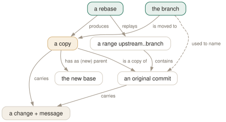

Day 09
Rebase
Replaying your commits on a new base — new commits, new hashes, and the rules that follow.
By the end of today you can
- explain what rebase does in terms of Day 1's objects: which commits it copies, and why the copies have new hashes
- rebase a branch onto its upstream, or transplant part of it with
--onto, and see a conflict mid-rebase through to the end - publish a rebased branch with
--force-with-leaseand know the one case in which even that clobbers a colleague
Rebase does not move commits; it copies them
Merging joins two lines of history with a new commit. Rebasing makes your line look as if it had been started later: it takes the commits on your branch that are not on the new base, re-applies each one's change on top of that base as a new commit, and moves your branch to the last copy. The result is a straight line. The price is that every one of your commits has been replaced.
Here topic forked from B, and main has since gained C and D:
$ git log --oneline --graph --all
* 712d6e9 D
* e6927c6 C
| * 9c9d3df T2
| * 133afce T1
|/
* d287932 B
$ git switch topic && git rebase main
Successfully rebased and updated refs/heads/topic.
$ git log --oneline --graph --all
* 223cc29 T2
* 1fd27af T1
* 712d6e9 D
* e6927c6 C
* d287932 B
$ git cat-file -t 133afce
commit
T1 was 133afce and is now 1fd27af. The old object is still there, unreferenced; Day 11 shows how to find it again. What was replayed is exactly the set main..topic from Day 7 — rebase is that range plus a series of cherry-picks (Day 15).

Upstream, and --onto for transplants
git rebase <upstream> replays <upstream>..HEAD onto upstream. With no argument it uses the branch's configured upstream, @{u}, which makes git fetch && git rebase the standard way to bring a private branch up to date.
The three-argument form separates “what to replay” from “where to put it”: git rebase --onto <new> <old> <branch> replays <old>..<branch> on top of new. The classic case is a branch sub that was started from topic and should now stand on main without topic's commits:
$ git log --oneline main..sub
8562903 S2
cac4566 S1
223cc29 T2
1fd27af T1
$ git rebase --onto main topic sub
Successfully rebased and updated refs/heads/sub.
$ git log --oneline main..sub
4df1e75 S2
d8444e0 S1
When a replay conflicts
Each commit is applied separately, so a conflict stops the rebase at that commit, with the rest still queued:
$ git rebase main
CONFLICT (content): Merge conflict in app.conf
error: could not apply 936e5b1... Raise timeout
$ git status
interactive rebase in progress; onto 9042deb
Last command done (1 command done):
pick 936e5b1 # Raise timeout
Next command to do (1 remaining command):
pick d58b8d4 # Add x
$ cat app.conf
<<<<<<< HEAD
timeout = 10
=======
timeout = 60
>>>>>>> 936e5b1 (Raise timeout)
Resolve the file as on Day 4, git add it, and git rebase --continue commits it and moves to the next. --skip drops the commit that stopped (if its change is no longer needed), and --abort puts the branch back exactly where it started. REBASE_HEAD names the commit being applied, so git show REBASE_HEAD shows what you were trying to do.
Publishing a rewrite: lease, not force
Once a rebased branch has been pushed before, the remote holds the originals and a normal push is refused. --force overwrites whatever the remote has — including commits a colleague pushed since you last looked. --force-with-lease overwrites only if the remote branch is still where your origin/<branch> says it is:
$ git push --force-with-lease
! [rejected] feat -> feat (stale info)
Someone pushed while you were rewriting; the lease has saved their commit. Now fetch, look at what arrived, and integrate it.
The one rule
Rebase freely what only you have. Do not rebase commits other people have based work on: their clones still contain the originals, and the next time they pull they get your copies as well — the same changes twice, often with conflicts. A shared main is never rebased. A feature branch that only you push to may be, as often as you like, until someone else starts building on it.
Tomorrow: the todo list itself — reordering, squashing, rewording and splitting commits with rebase -i.
New vocabulary
Commands
| Command | Does |
|---|---|
git rebase <upstream> | Replay the commits in <upstream>..HEAD on top of upstream. With no argument, uses @{u}. |
git rebase --onto <new> <old> [<branch>] | Replay <old>..<branch> on top of new: transplant part of a branch. |
git rebase --continue | After resolving and git adding a conflict, commit it and go on. |
git rebase --skip | Drop the commit that stopped, and go on. |
git rebase --abort | Put the branch back exactly where it was before the rebase started. |
git push --force-with-lease | Overwrite the remote branch only if it is still where your remote-tracking branch says. |
git push --force-if-includes | With the lease: also refuse if the remote tip was fetched but never integrated locally. |
Options
| Option | Does |
|---|---|
push.useForceIfIncludes | Make every --force-with-lease behave as if --force-if-includes were given. |
Drillsdo these in a real terminal, today
Self-check
Answer out loud first, then unfold.
After git rebase main, git log shows your commits with the same messages, authors and dates. Why is git push now rejected?
Because they are not the same commits. Each copy has a new parent — the tip of main instead of the old fork point — and a commit's hash covers its parent (Day 1). So each copy is a new object, and your branch now points at a chain the remote has never seen and that does not contain the chain it has. Pushing it would drop the old commits, and git push refuses anything that is not a fast-forward unless you force it.
Mid-rebase, git status says you are not on any branch and git branch shows (no branch, rebasing topic). Have you lost your branch?
No. Rebase works on a detached HEAD: it checks out the new base, cherry-picks your commits onto it one at a time, and only at the end moves topic to the result. Until then topic still names the original commits, which is precisely why --abort can restore everything by pointing back to it.
During a rebase conflict, the block marked <<<<<<< HEAD contains the other team's code, not yours. Is git confused?
No, but the labels are the reverse of a merge. In a rebase, HEAD is the new base plus the commits already replayed — that is, main's version. Your commit is the one being applied, shown after ======= with its hash and subject. So in a rebase “ours” is upstream and “theirs” is you. Remember this when Day 17 introduces --ours and --theirs.
You ran git fetch before git push --force-with-lease, to be safe. It succeeded — and deleted the commit a colleague had just pushed. How?
The lease checks that the remote branch is where your remote-tracking branch says it is. The fetch updated origin/feat to include your colleague's commit, so the check passed, although you never looked at that commit or rebased onto it. Anything that updates remote-tracking branches in the background — an IDE, a periodic fetch — has the same effect.
--force-if-includes closes the hole: it also requires that the remote tip be reachable from some entry in your local branch's reflog, i.e. that you actually integrated it. It refused with (remote ref updated since checkout). push.useForceIfIncludes turns it on for every lease.
Cheat sheet
git rebase # replay @{u}..HEAD onto @{u}
git rebase main # replay main..HEAD onto main
git rebase --onto NEW OLD BR # replay OLD..BR onto NEW
# at a conflict: fix, git add, then one of
git rebase --continue | --skip | --abort
git show REBASE_HEAD # the commit that stopped
# conflict labels: HEAD = upstream (ours), your commit = theirs
git push --force-with-lease --force-if-includes
# rule: never rebase what someone else has built on
Everything through Day 09
Commands
| Command | Does |
|---|---|
git init -b main | Create an empty repository whose first branch is main. |
git hash-object <file> | Print the object name the file's contents would get. Writes nothing without -w. |
git cat-file -t <object> | Print an object's type: blob, tree, commit or tag. |
git cat-file -p <object> | Pretty-print an object's contents. The one command that shows what git really stores. |
git cat-file -s <object> | Print an object's size in bytes. |
git ls-tree -r <tree-ish> | List every blob in a tree, recursively, with mode and hash. |
git rev-parse HEAD | Turn a name into the full hash it currently means. |
git count-objects -v | Count loose and packed objects and the disk they use. |
git status -s | Show each changed path with two columns: index vs HEAD, then working tree vs index. |
git add <path> | Copy the file's current contents into the index. Writes the blob immediately. |
git add -p | Walk through each hunk and choose which ones go into the index. |
git diff | Show what differs between the index and the working tree — what add would stage. |
git diff --staged | Show what differs between HEAD and the index — what commit would record. |
git restore <path> | Overwrite the working-tree file with the index version. Discards unstaged edits. |
git restore --staged <path> | Reset the index entry to HEAD's version. The working tree is untouched. |
git commit [-a] | Turn the index into a tree, wrap it in a commit, move the branch to it. -a first stages every modified tracked file (never untracked ones). |
git rm --cached <path> | Remove a path from the index only; the file stays on disk, now untracked. |
git branch | List local branches; * marks the one HEAD names. |
git branch -v | List branches with the commit each points at and its subject line. |
git branch <name> | Create a branch at HEAD without switching to it. |
git switch <branch> | Point HEAD at a branch and update the index and working tree to its commit. |
git switch -c <name> | Create a branch at HEAD and switch to it in one step. |
git switch - | Switch back to the branch you were on before. |
git switch --detach <commit> | Point HEAD directly at a commit, with no branch in between. |
git branch -d <name> | Delete a branch, refusing unless it is merged into its upstream (or into HEAD, if it has none). |
git branch -D <name> | Delete a branch unconditionally. |
git branch -m <old> <new> | Rename a branch. |
git merge <branch> | Bring the branch's history into the current one: fast-forward if possible, else a merge commit. |
git merge --ff-only <branch> | Merge only if it is a fast-forward; otherwise refuse and change nothing. |
git merge --no-ff <branch> | Always create a merge commit, even when a fast-forward was possible. |
git merge --abort | Give up a conflicted merge and restore the state before it started. |
git merge-base A B | Print the best common ancestor of two commits — the version a merge compares against. |
git ls-files -u | List the unmerged index entries: one line per stage per conflicted path. |
git show :1:<path> | Show the base version of a conflicted file. :2: is yours, :3: theirs. |
git checkout --conflict=merge <path> | Recreate the conflict markers in a file you mangled; =zdiff3 works too. |
git clone <url> | Copy a repository: all objects, its branches as origin/*, and one local branch checked out. |
git remote -v | List remotes with their fetch and push URLs. |
git remote add <name> <url> | Register another repository under a short name. |
git fetch | Download new objects and move the remote-tracking refs. Never touches your branches or files. |
git pull | Fetch, then integrate the upstream into the current branch. |
git push | Send the current branch's commits and move the branch of the same name on the remote. |
git push -u origin <branch> | Push and record origin/<branch> as this branch's upstream. |
git push origin --delete <branch> | Delete a branch on the remote. |
git branch -vv | List branches with their upstream and ahead/behind counts. |
git log --oneline --graph --all | Draw every branch's history, one line per commit. |
git log -p | Show each commit's diff against its parent. |
git log --stat | Show which files each commit touched, and how much. |
git log --author=<re> --since=<date> | Keep only commits whose author matches, from a date onwards. |
git log -- <path> | Keep only commits that changed the path. The -- separates paths from revisions. |
git log --follow -- <file> | Follow one file's history back through renames. |
git log -S<string> | Pickaxe: keep commits that change how many times the string occurs. |
git log -G<regex> | Keep commits whose diff adds or removes a line matching the regex. |
git log -L :<func>:<file> | Show the history of one function (or -L 10,20:file for a line range). |
git show <commit> | Show one commit: message and diff. |
git blame -w -C <file> | Annotate each line with its last commit, ignoring whitespace and seeing moves between files. |
git rev-parse --verify <rev> | Resolve an expression to one object name, or fail. The checker for everything today. |
git rev-parse --abbrev-ref <rev> | Print the short ref name an expression means: @{u} becomes origin/main. |
git rev-parse --symbolic-full-name <rev> | Print the full ref name, e.g. refs/remotes/origin/main. |
git log A..B | List commits reachable from B but not from A: what B has that A lacks. |
git log --left-right A...B | List commits on either side but not both, marked < or >. |
git diff A...B | Diff from the merge base of A and B to B: what B changed since they split. |
git show <rev>:<path> | Print a file as it was in any commit, without checking anything out. |
git show :<path> | Print the version of a file currently staged in the index. |
git commit --amend | Replace the last commit with a new one built from the current index. Opens the editor. |
git commit --amend --no-edit | Amend, keeping the message: for the file you forgot to add. |
git reset --soft <rev> | Move the branch to rev. Index and working tree untouched. |
git reset <rev> | Move the branch and reset the index to it (--mixed, the default). Working tree untouched. |
git reset --hard <rev> | Move the branch, and overwrite index and working tree to match. Destroys uncommitted work. |
git reset -- <path> | Copy path from HEAD into the index: unstage. The branch does not move. |
git restore --source=<rev> <path> | Overwrite a working-tree file with its version from any commit. |
git revert <commit> | Make a new commit that undoes commit. The safe undo for published history. |
git clean -n | List the untracked files -f would delete. Add -d for directories, -x for ignored files. |
git clean -fd | Delete untracked files and directories. Ignored files survive unless -x. |
git rebase <upstream> | Replay the commits in <upstream>..HEAD on top of upstream. With no argument, uses @{u}. |
git rebase --onto <new> <old> [<branch>] | Replay <old>..<branch> on top of new: transplant part of a branch. |
git rebase --continue | After resolving and git adding a conflict, commit it and go on. |
git rebase --skip | Drop the commit that stopped, and go on. |
git rebase --abort | Put the branch back exactly where it was before the rebase started. |
git push --force-with-lease | Overwrite the remote branch only if it is still where your remote-tracking branch says. |
git push --force-if-includes | With the lease: also refuse if the remote tip was fetched but never integrated locally. |
Options
| Option | Does |
|---|---|
user.name / user.email | Set the identity written into every commit's author and committer lines. |
init.defaultBranch | Name the first branch of every new repository. |
commit.verbose | Show the staged diff below the message in the commit editor. |
branch.sort | Set the default order of git branch; -committerdate puts recent work first. |
merge.conflictStyle | Choose the marker style: merge (default), diff3 or zdiff3. |
pull.ff | only: let git pull fast-forward and refuse anything else. |
push.autoSetupRemote | Make a plain git push of a new branch create it upstream and track it. |
fetch.prune | Delete remote-tracking refs whose branch was deleted on the remote, on every fetch. |
diff.colorMoved / diff.colorMovedWS | Colour moved blocks differently from added and removed ones; allow-indentation-change still recognises a re-indented move. |
push.useForceIfIncludes | Make every --force-with-lease behave as if --force-if-includes were given. |